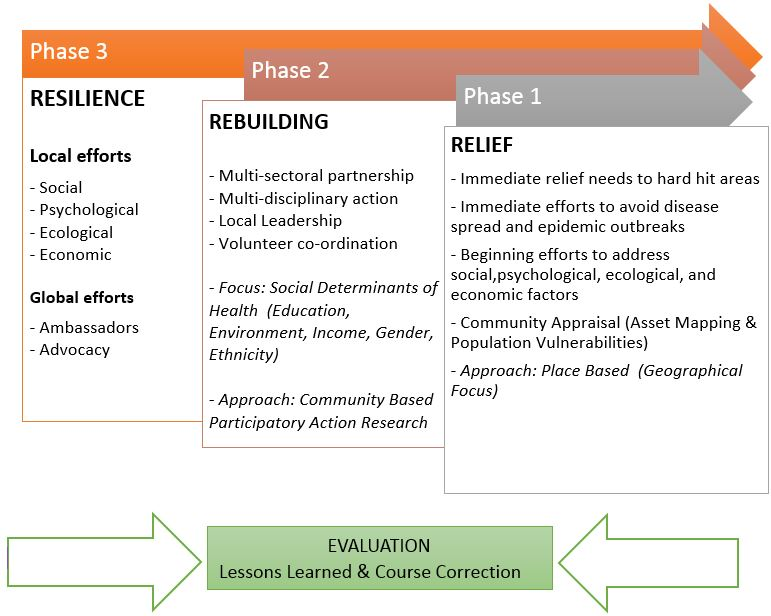
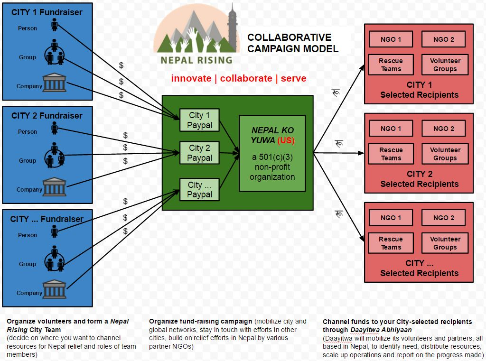

<section class="page-container campaign-page">
   
    <div class="container">
        
        <h1 class="page-title">About Our Campaign</h1>
        
        <p>Nepal Rising is a global collaborative campaign organized for providing relief, rebuilding, and resilience efforts in Nepal in the aftermath of the devastating earthquake on April 25, 2015. 
We seek to sustain the movement to empower Nepali communities to bounce back from this adversity much stronger and brighter. Through local and global partnerships, this campaign will provide a common platform to share ideas, raise funds, and coordinate volunteers towards a common purpose of building resilient communities in Nepal.
We invite you to join us and be a part of this movement for relief, rebuilding, and resiliency.  Let’s join hands to see Nepal rising, brighter and stronger!</p>
        
        <p class="small-detail">Nepal Rising is a collaborative campaign administered by Nepal Ko Yuwa, a US registered 501 (c)(3) non-profit organization   (EIN: 45-2734874). Your contribution to Nepal Rising is tax-deductible.</p>

        <h1 class="page-title line-title">Why this global campaign?</h1>
            
        <p>In the aftermath of the devastating earthquake that struck Nepal on April 25, 2015, the supply of basic needs such as food, water, clothing, shelter and medications have become a critical issue in the relief efforts. In the many months to come, there will also be immense need for healing and rebuilding efforts. </p>
        
        <p>Amid these challenges, hope lives in the resilience of the Nepali people to rise from the rubble, stronger and united to rebuild their nation together. Hope also lives in the warm affection of friends of Nepal around the world who are already coming together to support critical disaster relief and recovery efforts in Nepal. Our campaign is therefore organized with the same philosophy to provide an integrated relief, rebuilding and resiliency effort in Nepal.
</p>
       
       <p>Nepal Rising campaign envisions a resilient Nepal where citizens are empowered to embrace responsibility and come together to rise from the current adversity towards a thriving and sustainable future. </p>
       
       <p>The campaign’s mission is to organize a global collaborative campaign for relief, rebuilding, and resiliency in Nepal.</p>
        
           
        <h1 class="page-title line-title">How will this campaign function?</h1>

        <p>Through a place based approach, this campaign will collaborate with local and global efforts to build resilient communities in Nepal through three strategic goals:
</p>

        <ul>
            <li>To support district-based NGOs for immediate earthquake relief efforts.
</li>
            <li>To collaborate with community-based non-governmental and governmental efforts for community rebuilding.
</li>
            <li>To nurture a global community of supporters for fostering resilient local communities.
</li>
        </ul>
           
        <p>Our action model follows an integrated overlapping phases geared towards relief, rebuilding, and resiliency. The campaign will prioritize distribution of services to rural Nepal, where relief efforts are limited. It will collaborate with organizations in Nepal and around the world to identify local NGOs in selected districts for conducting important rebuilding efforts. The Nepal Ko Yuwa Nepal office will liaise with district-based coordinators and pertinent governmental and non-governmental organizations in channeling collected funds. The campaign will also build partnerships both in and outside of Nepal to foster a community of supporters worldwide with shared values of hope and responsibility of a resilient Nepal.</p>
        
        
        
        <h1 class="page-title line-title" style="margin-top: 20px; margin-bottom: 20px;">Funding Model</h1>
        
        <p>Funds raised from both the local and global efforts contribute towards the larger goal of Nepal Rising.</p>
        
        <p>Our partners organize local volunteers, networks, and raise funds to mobilize city and global efforts. These funds are collected in the global pool of Nepal Ko Yuwa, a US based 501(c)(3) non-profit organization.</p>
        
        <p>Nepal Ko Yuwa will then channel the received funds to city-selected districts and projects through our Nepal based team, the Daayitwa Abhiyan. Daayitwa will mobilize its volunteers and Nepal based partners to then implement the larger work plan of Nepal Rising in selected geographical areas to provide relief, rebuilding, and community resilience efforts to build resilient communities in Nepal.</p>
        
        
        
    </div>
    
</section